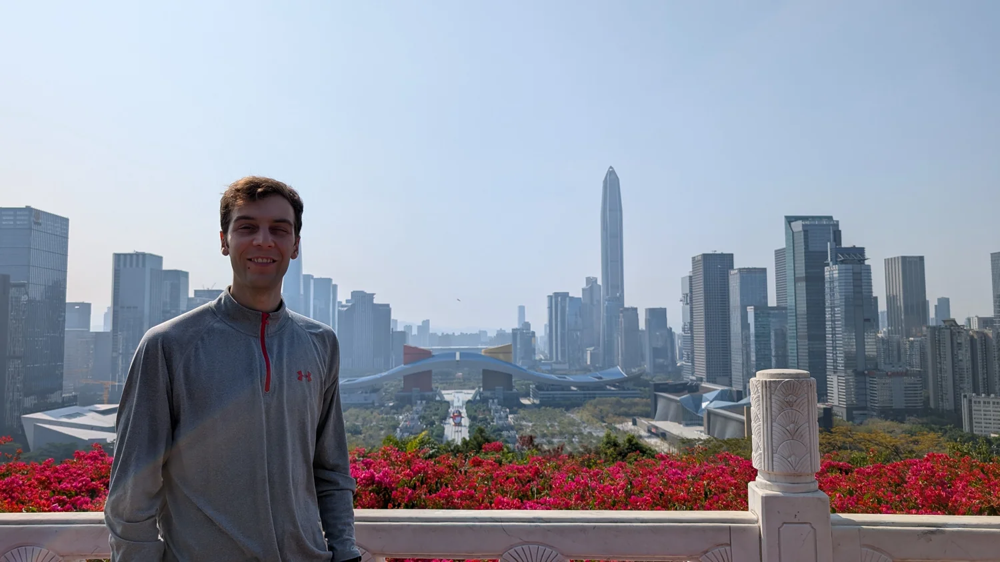
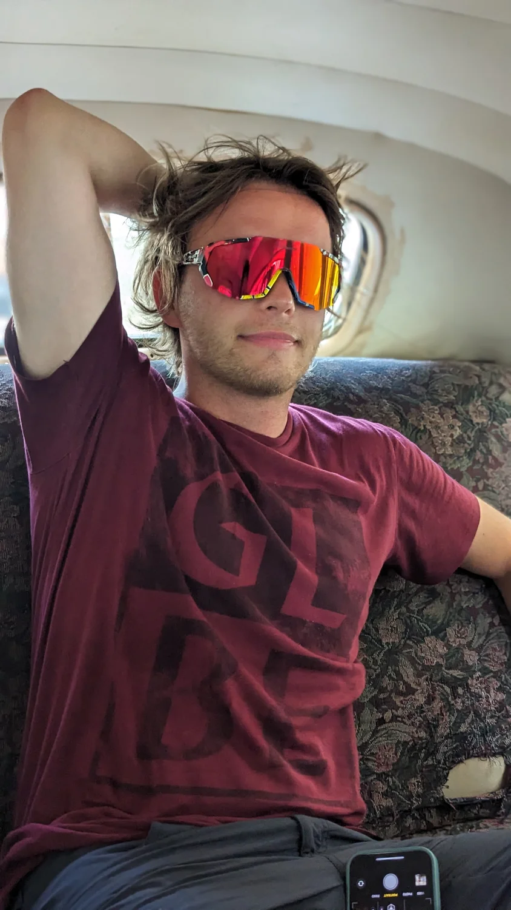

31 gennaio — 8 febbraio 2025 · selezionato
Nove corse tra il porto, le salite del Peak e Shenzhen. In mezzo, un sacchetto di pasticceria, pranzi dal banco e dim sum: qui ho raccolto le tracce e le soste del viaggio.
9 corse · 170,46 km · 7 soste

11–25 agosto 2023 · selezionato
L’Avana, Viñales, Trinidad e Varadero: sei corse, una breve nuotata e parecchie soste. Ho raccolto le tracce di quelle mattine e i luoghi fotografati tra un’uscita e l’altra.
6 corse · 60,45 km · 8 soste

2–4 novembre 2023 · selezionato
Due corse tra le colline e le strade di Kyoto. Poi templi, torii, dolci ai fagioli rossi e mochi: i miei percorsi e le soste di quei giorni.
2 corse · 21,85 km · 6 soste